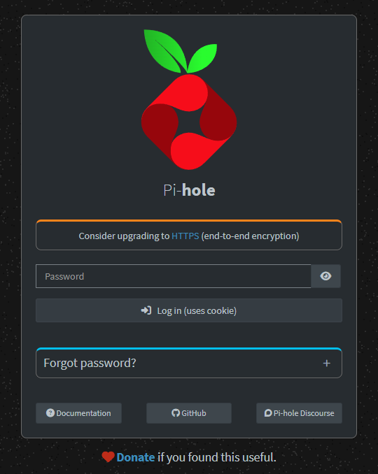
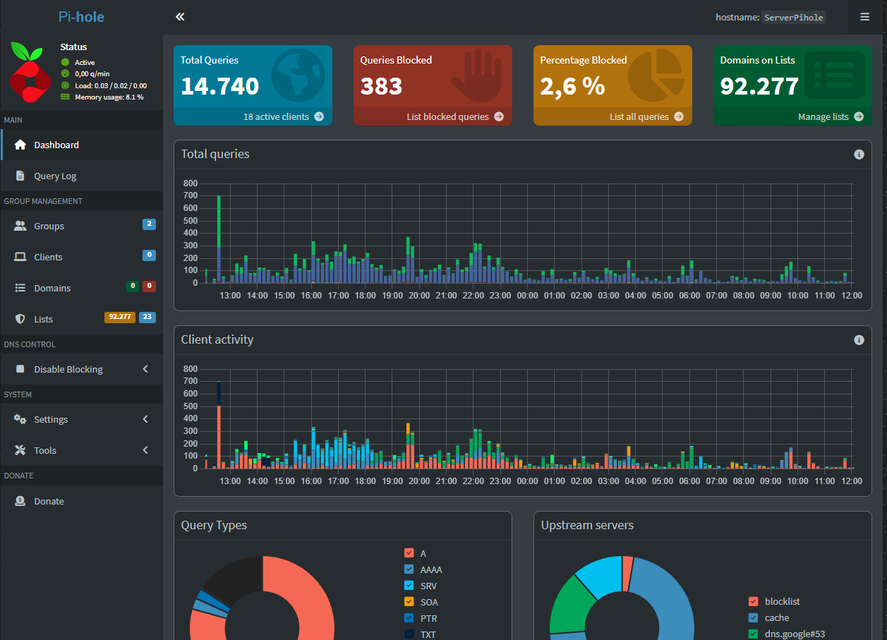

📘 Proyecto de Pi-hole
Instalación
La instalación de Pi-hole es bastante simple. Lo primero que necesitamos es una Raspberry Pi con Raspberry Pi
OS Lite instalado. Una vez que tenemos el sistema operativo listo, podemos proceder a instalar Pi-hole.
La versión que he utilizado es Pi-hole v5.17.1.
Proceso de instalación
Una vez que tenemos la Raspberry Pi configurada y conectada a la red, accedemos por SSH y ejecutamos el
siguiente comando para instalar Pi-hole:
Comando de instalación
curl -sSL https://install.pi-hole.net | bash
Este comando descarga y ejecuta el script de instalación oficial de Pi-hole.
Selección de interfaz de red
Durante la instalación, seleccionamos la interfaz de red que usará Pi-hole (generalmente eth0 o wlan0).

Configuración DNS
Elegimos el proveedor DNS que queremos utilizar. Las opciones recomendadas son Cloudflare (1.1.1.1) o Google (8.8.8.8).

Instalación completada
Una vez finalizada la instalación, se nos mostrará la contraseña del panel web y la IP de acceso.

Acceso al panel web
Accedemos al panel de control desde cualquier navegador usando la IP de la Raspberry Pi: http://[IP-RASPBERRY]/admin

Configuración del router
Para que todos los dispositivos de la red utilicen Pi-hole, debemos configurar el router para que use la IP
de la Raspberry Pi como servidor DNS. De esta forma, todas las consultas DNS pasarán por Pi-hole y serán filtradas.
Resultados
Una vez configurado, podemos ver en el panel web las estadísticas de bloqueo. En mi caso, Pi-hole está
bloqueando aproximadamente el 15-20% de las consultas DNS, lo que se traduce en una navegación más limpia
y rápida.
Panel de control
Dashboard principal con estadísticas en tiempo real

📊 Estadísticas y monitorización
El panel de Pi-hole nos proporciona información muy útil sobre el tráfico DNS de nuestra red:
- Total de consultas DNS realizadas.
- Porcentaje de consultas bloqueadas.
- Top dominios más consultados.
- Top clientes que más consultas realizan.
- Gráficos temporales de actividad.
- Lista de dominios bloqueados en tiempo real.
🔧 Mantenimiento
Para mantener Pi-hole actualizado, podemos ejecutar los siguientes comandos periódicamente:
pihole -up # Actualizar Pi-hole
pihole -g # Actualizar listas de bloqueo
pihole -gp # Actualizar listas de bloqueo y reiniciar servicio
+30%
Mejora de rendimiento